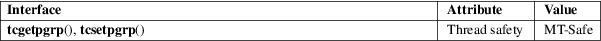

tcgetpgrp, tcsetpgrp − get and set terminal foreground process group
Standard C library (libc, −lc)
#include <unistd.h>
pid_t
tcgetpgrp(int fd);
int tcsetpgrp(int fd, pid_t
pgrp);
The function tcgetpgrp() returns the process group ID of the foreground process group on the terminal associated to fd, which must be the controlling terminal of the calling process.
The function tcsetpgrp() makes the process group with process group ID pgrp the foreground process group on the terminal associated to fd, which must be the controlling terminal of the calling process, and still be associated with its session. Moreover, pgrp must be a (nonempty) process group belonging to the same session as the calling process.
If tcsetpgrp() is called by a member of a background process group in its session, and the calling process is not blocking or ignoring SIGTTOU, a SIGTTOU signal is sent to all members of this background process group.
When fd refers to the controlling terminal of the calling process, the function tcgetpgrp() will return the foreground process group ID of that terminal if there is one, and some value larger than 1 that is not presently a process group ID otherwise. When fd does not refer to the controlling terminal of the calling process, −1 is returned, and errno is set to indicate the error.
When successful, tcsetpgrp() returns 0. Otherwise, it returns −1, and errno is set to indicate the error.
|
EBADF |
fd is not a valid file descriptor. | ||
|
EINVAL |
pgrp has an unsupported value. | ||
|
ENOTTY |
The calling process does not have a controlling terminal, or it has one but it is not described by fd, or, for tcsetpgrp(), this controlling terminal is no longer associated with the session of the calling process. | ||
|
EPERM |
pgrp has a supported value, but is not the process group ID of a process in the same session as the calling process. |
For an explanation of the terms used in this section, see attributes(7).

These functions are implemented via the TIOCGPGRP and TIOCSPGRP ioctls.
POSIX.1-2008.
POSIX.1-2001.
The ioctls appeared in 4.2BSD. The functions are POSIX inventions.
setpgid(2), setsid(2), credentials(7)